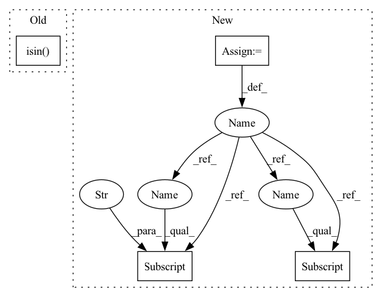

Pattern ID :24923

Before Change
// )
class_ids = np.arange(1, 22)
class_ids = class_ids[~np.isin(class_ids, [10, 18])]
class_ids = np.random.choice(class_ids, 10)
object_ids = []
for class_id in class_ids:
After Change
"franka_panda/panda.urdf", fixed_base=True
)
data = np.load("data/pile.npz")
object_ids = []
for class_id, position, quaternion in zip(
data["class_ids"], data["positions"], data["quaternions"]
):
coord = mercury.geometry.Coordinate(
position=position,
In pattern: SUPERPATTERN
Frequency: 3
Non-data size: 4
Instances
Fragment ID: 76739798
Project Name: wkentaro/safepicking
Commit Name: 1a11c14cdd6581a34e985e4d875032525109e855
Time: 2021-03-16
Author: www.kentaro.wada@gmail.com
File Name: examples/goal/bin_packing_no_act.py
M Class Name: AnonimousClass
N Class Name: AnonimousClass
M Method Name: main(0)
N Method Name: main(0)
M Parent Class:
N Parent Class:
M File Name: examples/goal/bin_packing_no_act.py
N File Name: examples/goal/bin_packing_no_act.py
M Start Line: 64
M End Line: 126
N Start Line: 70
N End Line: 123
'>
Before Change
// total_mimic_candidates.to_csv("total_mimic_candidates.csv", index=False)
mapped_total = pd.concat(mapped_total)
mapped_ptbxl = ptbxl_database[ptbxl_database["ecg_id"].isin(mapped_total.ptbxl_id)]
if not os.path.exists("results"):
os.mkdir("results")
mapped_ptbxl.to_csv(os.path.join("results", "mapped_ptbxl.csv"), index=False)
After Change
mapped_total = pd.concat(mapped_total)
mapped_total.rename(columns={"ptbxl_id": "ecg_id", "report": "mimic_report"}, inplace=True)
mapped_ptbxl = pd.merge(ptbxl_database, mapped_total, on="ecg_id", how="inner")
mapped_ptbxl = mapped_ptbxl[mapped_ptbxl["distance"] < 100]
if not os.path.exists("results"):
os.mkdir("results")
mapped_ptbxl.to_csv(os.path.join("results", "mapped_ptbxl.csv"), index=False)
'>
Fragment ID: 76739841
Project Name: jwoo5/fairseq-signals
Commit Name: 0c32309c18b933c252fe2773b178d942ceddf6fc
Time: 2022-12-08
Author: ojw0123@korea.ac.kr
File Name: fairseq_signals/data/ecg_text/preprocess/ptbxl_qa_pipelines/map_to_mimiciii.py
M Class Name: AnonimousClass
N Class Name: AnonimousClass
M Method Name: map_to_mimiciii(2)
N Method Name: map_to_mimiciii(2)
M Parent Class:
N Parent Class:
M File Name: fairseq_signals/data/ecg_text/preprocess/ptbxl_qa_pipelines/map_to_mimiciii.py
N File Name: fairseq_signals/data/ecg_text/preprocess/ptbxl_qa_pipelines/map_to_mimiciii.py
M Start Line: 633
M End Line: 839
N Start Line: 634
N End Line: 842
'>
Before Change
// )
class_ids = np.arange(1, 22)
class_ids = class_ids[~np.isin(class_ids, [10, 18])]
class_ids = np.random.choice(class_ids, 10)
object_ids = []
for class_id in class_ids:
After Change
"franka_panda/panda.urdf", fixed_base=True
)
data = np.load("data/pile.npz")
object_ids = []
for class_id, position, quaternion in zip(
data["class_ids"], data["positions"], data["quaternions"]
):
coord = mercury.geometry.Coordinate(
position=position,
'>
Fragment ID: 76739802
Project Name: wkentaro/safepicking
Commit Name: 1a11c14cdd6581a34e985e4d875032525109e855
Time: 2021-03-16
Author: www.kentaro.wada@gmail.com
File Name: examples/goal/bin_packing_no_act.py
M Class Name: AnonimousClass
N Class Name: AnonimousClass
M Method Name: main(0)
N Method Name: main(0)
M Parent Class:
N Parent Class:
M File Name: examples/goal/bin_packing_no_act.py
N File Name: examples/goal/bin_packing_no_act.py
M Start Line: 64
M End Line: 126
N Start Line: 70
N End Line: 123